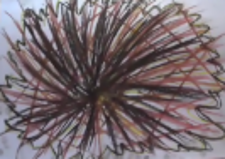
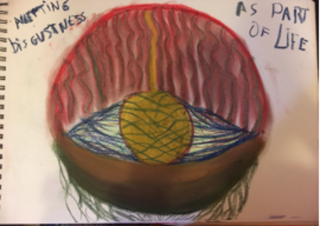
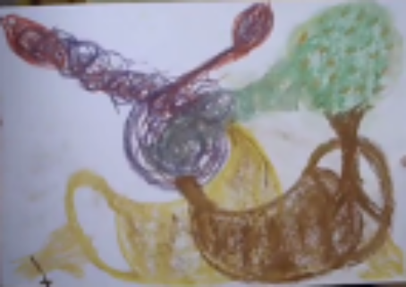
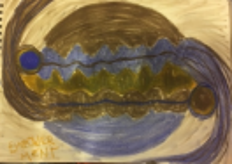
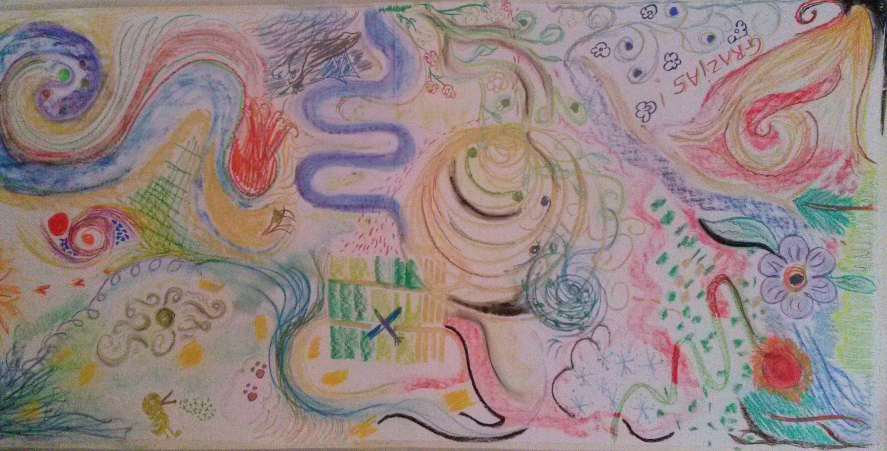
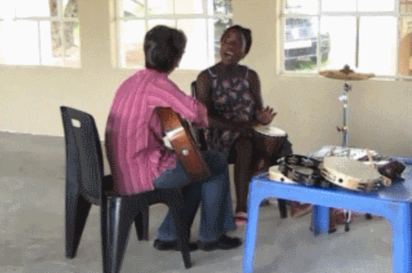
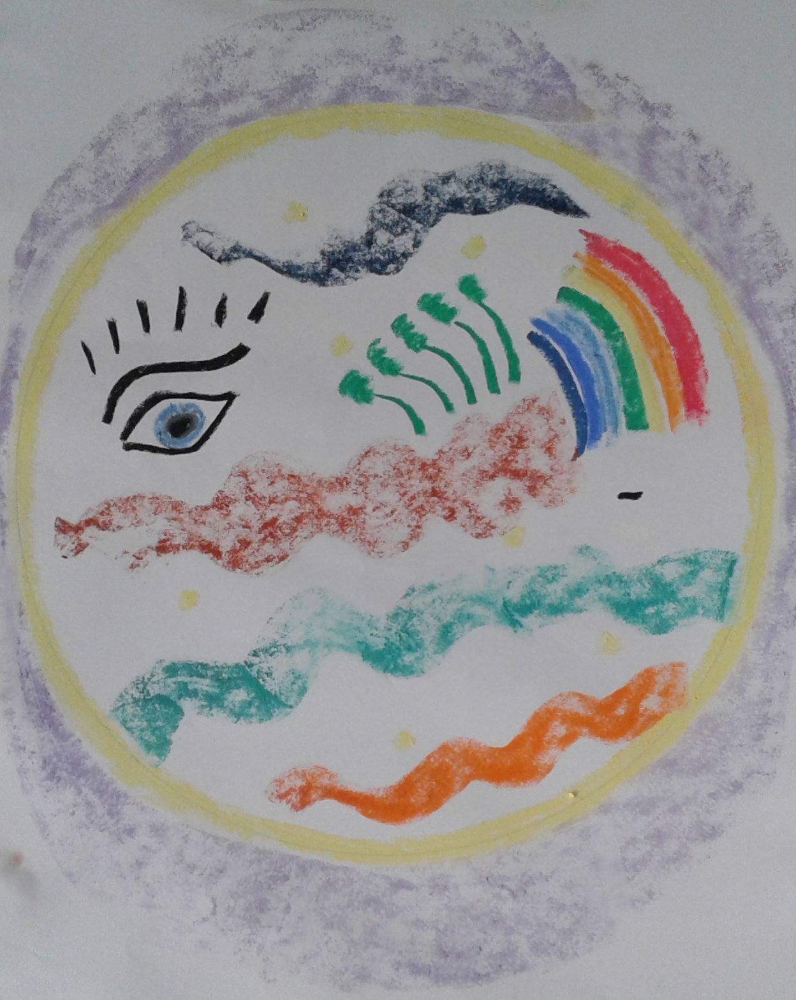
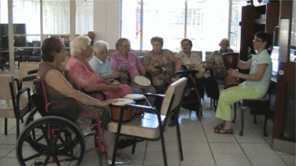

Music and Imagery (Continuum Model)




Music and Imageryc (MI) is areceptive music therapy method, one of the many adaptations of the
Guided Imagery in Music (GIM). MI is also a music therapy method using receptive music and
imagery techniques. Receptive music therapy involves listening to music for therapeutic benefits. MI was developed by Lisa Summer (1999) and the ultimate goal of the therapy is transcendence. Transcendence refers to moving beyond reality or the known to the unknown and connecting to the psyche.
MI lies on a continuum from a supportive level through re-education to the reconstructive level.
Each MI session is structured as follows:
- Prelude: The purpose of the introduction of a session is to find a focus for the client.
What is the issue at hand, or which resource needs to be explored during the session, is the question that will be answered during the prelude.
- Transition: After a focus is established, the client and therapist collaboratively find
suitable music to explore the focus deeper during the music listening. The transition also serves as a
second introduction, where the client gets an opportunity to relax into the moment and return to
the focus.
- Music experience: The chosen music is played whilst the client expresses him/herself
through imagery, most often through drawing. The music is repeated until the client’s drawing is
complete.
- Postlude: During the last part of the session, the drawing is used to discuss the client’s
process. Discussing the image leads the client to new insights.
Contact Petra to book a session
Guided Imagery in Music

Guided Imagery in Music (GIM) is a perceptive therapy where visualisation through listening is stimulated.
It was created and developed by Helen Bonny in the late 1970’s.
The client decides on an intention for the session through an extensive pre-talk with the therapist,
then the client is led into a deeply relaxed state in order to focus on the music.
Pre-recorded music which would fit the therapeutic intention is then used to elicit visualisations which originate from the subconscious mind.
The client is guided through this journey by simple questioning from the therapist, all the while listening to the music.
After the journey in the music, the client is brought back to the here and now.
Significant moments form the journey are then drawn on a Mandala.
The drawing becomes the point of departure for discussing the journey and whatever the client has experienced while the music was played.
This method is unique as every individual can experience what they need and also offers the opportunity for the client to give the experience their own meaning.
The therapist does not impose any interpretation or explanation onto the client.
Contact Petra to book a session

Creative Music Therapy involves, mostly, improvisation of music on a range of instruments including the voice.
Nordoff and Robbins were the fathers of this modality and, in 1971, started using music in a therapeutic manner with children impeded by disabilities.
Music and its elements are used as a communication tool in cases where verbal communication is not possible. It is used to create a safe space within which to explore emotions and feelings which are difficult to express in words, to learn to focus,
to be creative without feeling judged, to move where the body is otherwise struggling,
to change behaviour in a non-threatening way, to stimulate perceptual difficulties and to stimulate becoming more autonomic and independent.
Contact Petra to book a session
Positive Psychology focuses on the opposite side of the scale of pathology without denial of the problem.
It is built on five pillars:
- Positive emotions
- Engagement
- Relationships
- Meaning
- Achievement
When clients rediscover their strengths and build on these, personal growth is easier and far more achievable.
Using strengths to overcome difficulties gives a sense of autonomy and self-worth.
Contact Petra to book a session
Mandala Assessment Research Instrument

MARI was developed from the Jungian principle of using symbol and colour to get a glimpse of what is going on in the subconscious.
It assesses where the client is on a psychological level through the use of colour and symbol.
The client chooses their own symbols and colours and engage with these symbols
in terms of where they lie on a circular board which depicts the stages of human life.
Contact Petra to book a session

Community Music Therapy is adapted to fit the needs of a particular community such as homes for the elderly and special-needs schools.
Music and its elements are used to the benefit of the group in an appropriate way to achieve therapeutic goals.
This includes memory stimulation, movement of certain body parts, creating music for a concert or project,
contributing to the quality of life, making clients felt heard and understood, expression of emotion in a healthy way and many others.
Contact Petra to book a session
Custom-designed team building sessions which incorporate the fun yet focused use of music and its elements are structured to suit the needs of each unique group.
Sessions may range from short hour long sessions to complete daily sessions.
Contact Petra to book a session